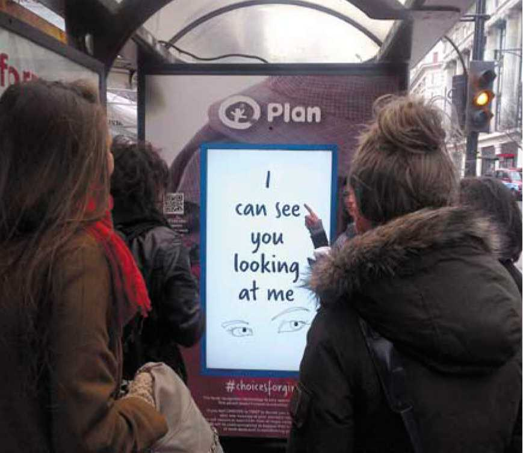
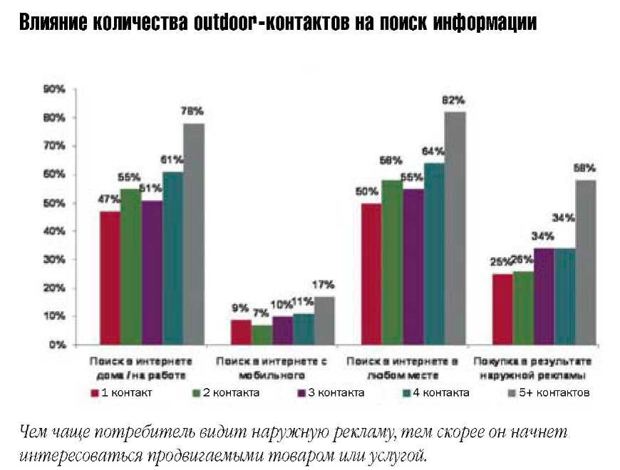
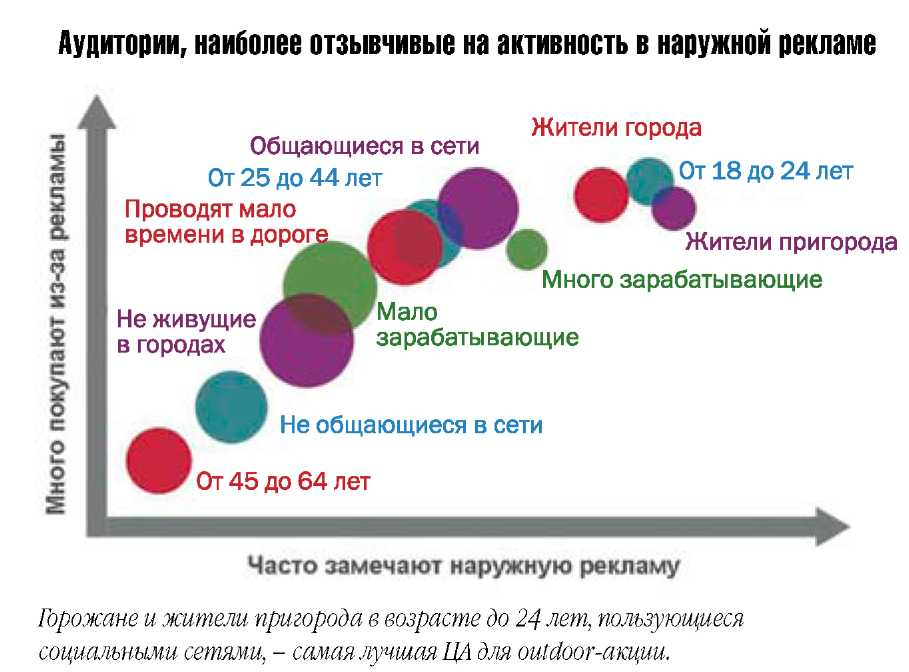
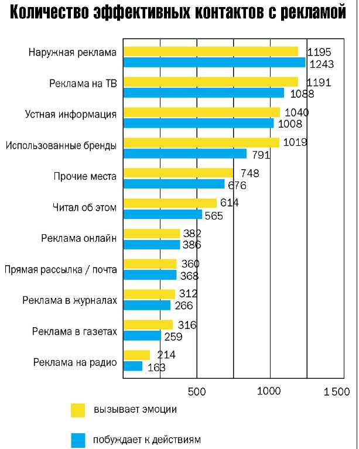
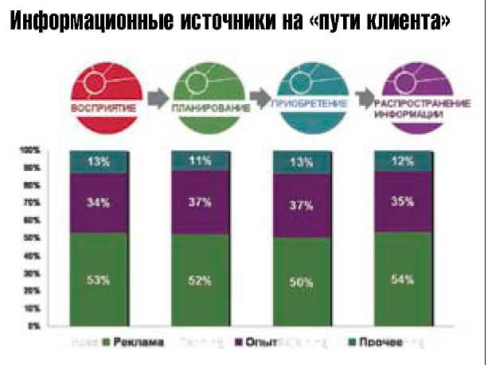
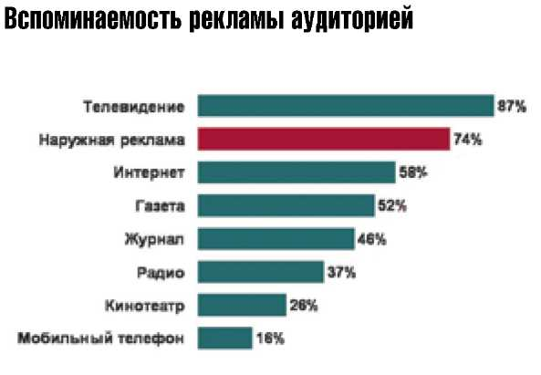

Верный выбор
УЗЕЛКИ НА НИТИ АРИАДНЫ
Британская компания Outdoor Media Centre провела исследование покупательского поведения и влияния на него различных информационных каналов. Согласно заключениям аналитиков, наружная реклама играет значительную роль на всех этапах принятия решения при покупке, влияет на восприятие бренда, является значимым средством коммуникации. Основные выводы авторов исследования (компании ICM Research и On Device Research) содержатся в этой публикации.
Британские социологи предположили, что продвижение любого человека от осознания желательности покупки до ее совершения не прямолинейно и непрерывно, а состоит из отдельных этапов, которые каждый индивидуум либо проходит по очереди, либо (что чаще) останавливается на каком-то из них и возвращается к предыдущим. Задачу своего исследования ученые обозначили так: определить, какой коммуникационный канал (или каналы) задерживает "откат" потенциального покупателя к ранним этапам и возвращает его на путь приобретения ("путь клиента"). Специалисты ICM Research и On Device Research четко выделили четыре уровня, через которые неизбежно проходит будущий владелец товара или услуги:
- восприятие: пассивное впитывание информации о продуктах и услугах, не ведущее к действию.
- планирование: исследование совокупности предложений и поиска информации о желательной для приобретения категории товаров или услуг.
- приобретение: не только сам факт покупки, но и сопутствующие и непосредственно предшествующие действия: изучение мест, где можно приобрести товар или услугу, уточнение наиболее подходящего бренда, определение приемлемой для себя цены.
- распространение информации: после удачной или неудачной покупки люди делятся опытом, передавая сведения внутри ЦА, происходит своеобразный обзор качества приобретенного товара или услуги.
Соответственно, само исследование ученые поделили на две части: в первой изучалась так называемая статическая составляющая (когда человек только собирает первичную информацию, но ничего не предпринимает для совершения покупки), во второй - динамическая (человек уже встал на «путь клиента», находится в поиске дополнительных сведений и занят уточнением своих желаний).
На месте стой, раз-два
При раскрытии первой составляющей исследователи выясняли, какие группы населения наиболее восприимчивы к сообщениям наружной рекламы, как влияет outdoor-активность брендов на покупательское поведение. Анализ проводился путем многостраничных опросов полутора тысяч респондентов «в поле», т. е. без отрыва людей от привычной им среды жизни. Выяснилось, например, что британцы, хоть раз видевшие наружную рекламу товара или бренда, при непосредственной встрече с ним на прилавке с большей вероятностью примутся его крутить в руках, рассматривать со всех сторон и изучать потребительские качества (т. е. отнесутся как к давно знакомому). Именно outdoor-кампании подталкивают потребителей к активному поиску нужных сведений о товаре в Интернете.
В целом ученые выяснили, что наиболее восприимчивы к наружной рекламе молодые и мобильные жители городов, состоятельные, пользующиеся Всемирной паутиной. Именно outdoor больше других медиаканалов толкает людей на поиск информации (в том числе и через смартфоны), причем чем чаще они видят одинаковые постеры (т. е. чем выше частота контакта), тем поиск ведется интенсивнее. Поэтому неудивительно, что «чувствительные» к сообщениям наружки люди являются самыми активными пользователями социальных сетей.
Вперед и вверх, а там . . .
Движение человека по «пути клиента» заслуживает более тщательного и всестороннего разбора. Как, под чьим воздействием он переходит от этапа к этапу? Почему задерживается на этом пути, как его вернуть на «истинную дорогу»? Вопросов слишком много. Для поиска ответов профессионалы из On Device Research увеличили аудиторию опрашиваемых (более 2100 человек) и с каждым заполнили двухнедельный «рекламный дневник», т. е. провели полный круглосуточный мониторинг всех информационных воздействий на него. Любопытно, что работа рекламистов небесполезна, даже если люди не становятся покупателями продвигаемого товара. около 65% всех рекламно-информационных контактов вызвали у участников исследования либо эмоциональный отклик, либо понуждение к действию (в 28% случаев контакт вообще вызывает оба чувства). Типичный пример первой реакции: «приятно, что они знают о моих потребностях и понимают меня», «надо будет поинтересоваться» или «я зря трачу время на это». Желание действовать тоже может быть разнообразным: «надо порыться в Сети», «поговорю об этом с друзьями», «стоит присмотреться». При этом наружная реклама является лишь третьим по значению каналом для такого контакта после ТВ и предметов обихода (человек смотрит на бренды, уже находящиеся в его пользовании или у друзей). Исследователи сделали вывод, что все рекламные средства так или иначе способствуют перерастанию смутного желания владеть в острую необходимость купить. При этом ни у одного из медиаканалов нет приоритета, они все важны. Но - по мере приближения клиента к покупке - возрастает роль именно наружки как масштабного визуального напоминания. Outdoor оказывает сильное влияние на каждом этапе, управляет исследованием, приобретением и рекомендациями.
Пробежимся пошагово
Вместе с тем наращивание рекламного давления на потребителя не приведет к его ускоренному движению по «пути клиента». Исследователи точно установили, что из всей «обработанной» аудитории потен¬циальных покупателей 70% остановятся на первом этапе, 46% из числа пришедших на вторую станцию на ней и останутся, до этапа приобретения дойдут уже 24%, осиливших два первых шага (т. е. примерно четыре человека из каждой сотни первоначальной аудитории - чистая математика). Последний этап - поделиться информацией - выдержат 38% из оставшихся после покупательской трехходовки (т. е. в итоге - один дошедший до финиша из стартовавшей сотни).
Важно то, что часть «непошедших дальше» возвращаются не к началу «пути», а к предыдущему пункту. Как часто мы говорим себе у прилавка: «Я еще подумаю»? Вот мы и отошли на шаг назад. Именно наружная реклама остается путеводной звездой, той самой нитью Ариадны, которая вернет покупателя на торный «путь клиента». То, что наружка, используя все многообразие форматов, способна искусно привлечь потребителя и нацелить его на покупки, уже не является большим сюрпризом. Ключевой аспект исследования - способы взаимодействия outdoor-активности с иными каналами, ускоряющими шаг по «пути клиента». Исследование Outdoor Media Centre высвечивает, определяет значение outdoor-кампаний на каждом из четырех этапов совершения покупки. Кроме того, оно дает хорошую основу для дальнейшего изучения - с тем, чтобы развить результаты и получить более глубокое понимание, как рекламные средства изменяют индивидуальную поведенческую модель.
Ознакомиться с исследованием Outdoor Media Centre полностью можно на сайте Outdoor.ru в разделе «Аналитика».